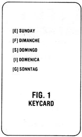
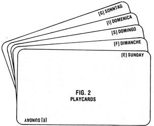

Borrow a few basic rules from the card games rummy and old maid ... add the conviction that learning can be fun ... and shuffle in a goodly dose of do-it-yourself imagination. What do you get? Well, I got Stacofax: a self-help system I developed for people who-like me-hate to memorize facts and figures!
One of the best features of Stacofax (get it? ... the deck is a stack of facts!) is its versatility. You can create variations of the game to suit children, adults, or players of all ages. Furthermore, it's possible to make cards that are meant to sharpen general knowledge, or that focus on one or more specific problem subjects.
If you have trouble with spelling, for example, you can make a Stacofax deck that will teach you-in just a couple of hours of fun-how to orthographize such words as dysrhythmia, jactitation, and ... well, or thographize. Or, if you've never quite been able to learn, say, the Presidents, the 50 states, or metric conversions, it's my bet that playing Stacofax can help. And believe it or not, you'll hardly know you're being educated ... because you'll be too busy enjoying yourself.
Before you sit down to make a set of Stacofax cards, though, you'll need to know a little more about how the game works.
All Stacofax decks are made up of two kinds of cards: keycards and playcards.
Keycards contain all the information to be learned in a given game. Each one in the deck is like a list of answers at the bottom of a quiz . . . for instance, if you were to play a game designed to help you learn the days of the week in English, French, Spanish, Italian, and German, the keycard for the word "Sunday" would look like that shown in Fig. 1.
Then, for each "answer" on any given keycard, the deck contains a playcard, with the individual item printed in the upper left and lower right comers of the card. Therefore, if a keycard lists, say, five words, you'll find-somewhere in the deck-five companion playcards, each showing a different one of those words.
The total number of keycards and playcards in your deck will be determined when you make the component cards for each game. I've found that ten keycards is just about optimum, but you can vary the number up or down to suit the subject matter (in our days-of-the-week example, there would necessarily be only seven keycards ... one for each day). Although you needn't list the same number of items on every keycard in the deck, I've found that the game plays best when keycards contain between four and seven entries apiece ... and that five items per keycard is ideal. The "model" Stacofax deck, therefore, contains 60 cards in all: ten different keycards, each with five corresponding playcards. Keep in mind that in many cases you'll have to deviate from the "norm" to accommodate the material you hope to learn or teach.
To make a Stacofax deck, write or type the information you want to learn-using the keycard/playcard arrangement I've just described- on blank cards. (The sidebar accompanying this article will give you some further ideas as to the kinds of subjects that can be included in the game.) Index cards, however, simply won't work for this purpose (take my word for it). In fact, the only kind I've found to be suitable-in terms of size, opacity, and "shuffleability"-is a special type referred to by printing company salespeople as "candidate" or "campaign" cards. The box I have is labeled: Round Corner, Die-Cut Cards-Size 63-011. Most major printing concerns should know what you need if you call and ask for such an item. In any event, when you buy yours, be sure to get all one color rather than a box of assorted hues. [EDITOR'S NOTE: None of the suppliers we contacted in our area-western North Carolina-carried such cards ... however, a few did say they could order them for us, and quoted prices for a box of 500 (the minimum quantity they would sell) ranging from around $8.00 to just over$10.00.1
Stacofax is an easy-but nonetheless challenging-game for between two and six people. (Actually, you can accommodate even more players simply by making the deck bigger. For example, by adding two newand, of course, different-keycards, with five corresponding playcards each, you'd expand your deck by 12 cards ... more than enough to allow for an extra player.)
To start, one person shuffles the cards, deals seven-face down-to each player, and places the remainder of the deck in the middle of the table. The top card is then turned up and-if it's a playcard-placed beside the deck (if it's a keycard, it must be "buried" in the deck and another card turned) to form the foundation for a discard pile.
The game can begin only if all players have been dealt at least one keycard. Players lacking such a card can return their hands to the deck and request new cards ... or alternatively, a mediator-a nonplayer-can search the deck for keycards and distribute one (in exchange for a playcard) to each of the "deprived" contestants. (This mediator, incidentally, can also serve as an official shuffier, dealer, and referee.)
In any event, once all the participants are holding one or more keycards in their hands, the person to the left of the dealer commences play. For the purposes of our discussion, let's suppose that you are that person.
First, look at whatever keycards are in your hand, and see if you're holding playcards that correspond to them. Two or more playcards that are listed on the same keycard constitute a match. Be aware, too, that you don't necessarily have to be holding the appropriate keycard to make a match ... pair any two playcards that you know go together. The keycards are in the deck to help you learn ... and, in fact, can't be used themselves to make plays. You can match playcards only.
Now, either draw a card from the top of the deck, or-if the discard matches a playcard in your hand (or, in subsequent turns, can be added to a match already placed on the board)-take the turned-up card from beside the deck. If you're unable to make a match with the card from the "throwaway" pile, you cannot pick it up and must select the top card from the deck (which is face down, of course).
In either case, once you've drawn a card, find whatever matches you can make and place them all, face up, in front of you ... so that the other players can see them. Then discard a playcard from your hand by placing it on the pile next to the deck. During the course of the game, each discard should be positioned so that it overlaps, but is just a bit to the side of, the card under it, so that at any given time everyone can see the identifying printing in the corners of all the cards in the pile.
After you've discarded, play will continue, clockwise, around the table ... with each person taking a turn by [ 1 ] picking up either a card from the top of the deck or from the throwaway pile, [21 making as many matches as possible using the cards in his or her hand, and also matching cards that may have already been placed on the table by any of the players during previous turns, and [3] discarding. (Be sure, however, to keep your matched cards in front of you-even if you've played off someone else's cards-because you'll need them for scoring at the game's end.)
Since we're on the subject, a few addi tional words about the discard pile are in order here: During your turn, you can pick up any card in the stretched-out stack, as long as you also pick up all the cards on top of the one you select. (Suppose, for example, that there are four cards on top of the one you're after in the discard pile. You'll have to pick up all five, and make a match using the bottom card. You're in luck if the others form sets too ... but if they can't be matched until later plays, that's also acceptable.)
Whatever you do, try your best to avoid making mismatches. Be sure that the cards you put down on the table really do correspond to each other or to cards already on the table. If they don't, and someone spots your mistake, you'll have to put all the cards in the incorrect "match" back in your hand. In fact, if a player catches your mismatch before you discard, you'll have to pick up all the cards in that group and forgo your turn without discarding. For instance, let's say that there are three correctly matched cards on the table, and during a subsequent turn you put down a fourth card that you mistakenly believe corresponds to the same keycard. If the error is noticed, you'll have to put all four cards back in your hand, and the next person's turn will immediately begin. (If, as a result of this development, there are no cards left in the discard pile, the top card in the deck should be turned up and-as long as it's not a keycard-placed beside the deck to start the stack once again.) On your next turn you can return the three correctly matched cards to the table and resume normal play.
Now here's a situation illustrating how you can use another contestant's mismatch to your own advantage: Let's say that the player before you puts down a match ... and-on your turnyou draw a keycard which shows that one of the cards in his or her "match" actually belongs in a different group ... and you also happen to have a card in your hand which really does correspond with the wrongly teamed card.
The following lists represent just a few examples- "thought starters", if you will-of t
kinds of information that can be included on Stacofax keycards, and of the various w
subjects can be presented within the game's format. Remember that, for every item
on a k card, you'll need to make a corresponding playcard ... and keep in mind, too,
that y don't necessarily have to limit any given Stacofax deck to just one subject!
element name chemical symbol atomic weight atomic number person who discovered it
a famous work the author when it was written where it was written an important quote from the work
X equals 5
X squared is 25
square root of X is 2.236
log X is . 69897
an ilog X is 100,000
1/4 a fraction
25% the percentage equivalent
.25 the decimal equivalent
218 another form
4/16 yet another form
an event when it occurred where it occurred why it was significant a key person involved
the country which continent primary language(s) a bordering country or ocean another bordering country or ocea
[1] ex
[2] trap
[3] o
[4] late
extrapolate
[1] t
[2] h
[31 r
[4] o
[5] u
[61 g
[7] h
*NOTE: When making a Stacofax spelling game, remember that-in general-words with fewer than three syllables should be spelled out with individual letters on the keycards (as in the second example), while more complex words (such as "extrapolate") should be divided only into syllables to make them more manageable. Also, letters and syllables on keycards and playcards should be numbered to signify the order in which they appear in the word, so that if (for instance) "artist" and "transom" were used in the same game, the "a" in one word could be distinguished from the "a" in the other. In this case, a playcard marked "[1a]" would correspond with "artist", and "[3a]" would go with "transom". You might even want to try playing using the rule that all matches must be made in the order that they're numbered!
|
 |
 |
|